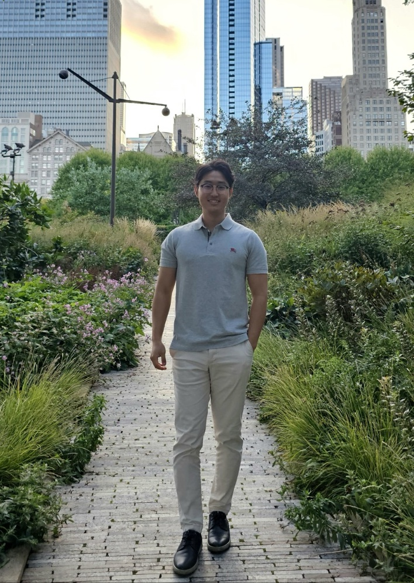

About
I am an environmental planner, civil engineer, and data scientist building computational solutions for data-driven planning against natural hazard risk .

I am a postdoctoral scholar in the Stanford Urban Resilience Initiative, advised by Professor Jack Baker.
My research combines computational modeling and geospatial data science to model natural hazard risk, which inform build decision support tools that guide more proactive, risk-informed approaches. During my PhD, I focused on wildfires and used fire spread simulations, remote sensing, and network science within a
I received my PhD in Environmental Planning at UC Berkeley advised by Professors Marta C. Gonzalez and John Radke as a member of the HumNet Lab.
I received my BS and MS degrees in Civil and Environmental Engineering at Seoul National University, where I was advised by Professor Yongil Kim as a member of the SPINS Lab.
Education
- PhD in Environmental Planning, UC Berkeley (Sep 2021 – May 2026)
Dissertation: Data-Driven Planning for Natural Hazard Risk Management - MS in Civil & Environmental Engineering, Seoul National University (Mar 2017 – Feb 2021)
Thesis: Local Climate Zone Classification Using Multi-Scale Convolutional Networks - BS in Civil & Environmental Engineering, Seoul National University (Sep 2012 – Feb 2017)
Thesis: Monitoring North Korea's 4th Nuclear Test Site Using Sentinel-1A DInSAR
Awards
Collaborations
I am fortunate to collaborate with academics, experts, practitioners from all around the world. Hover or click on a pin for details.
📍 Want to put your marker on this map? Let's collaborate — email me.